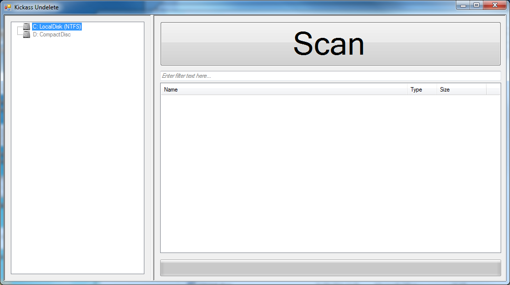
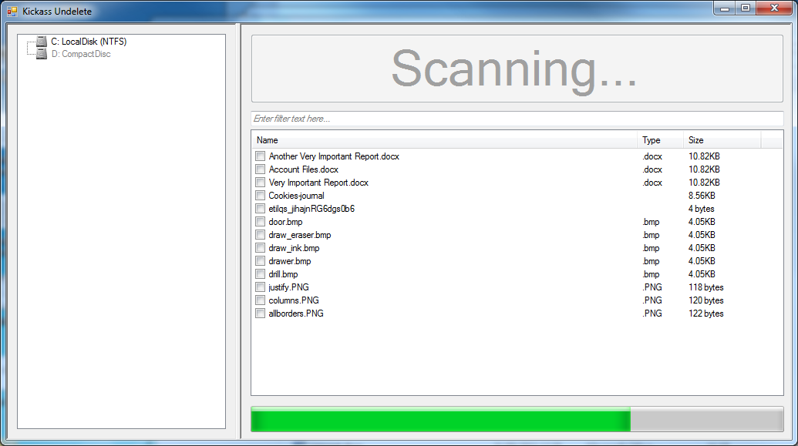
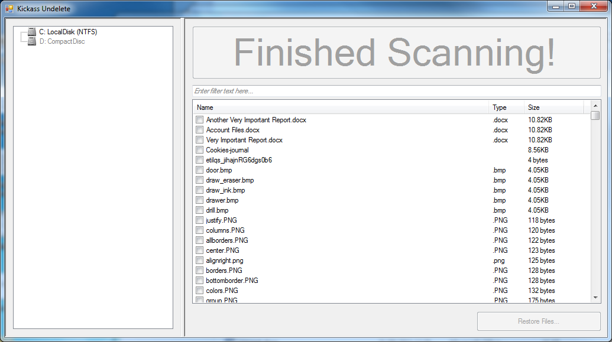
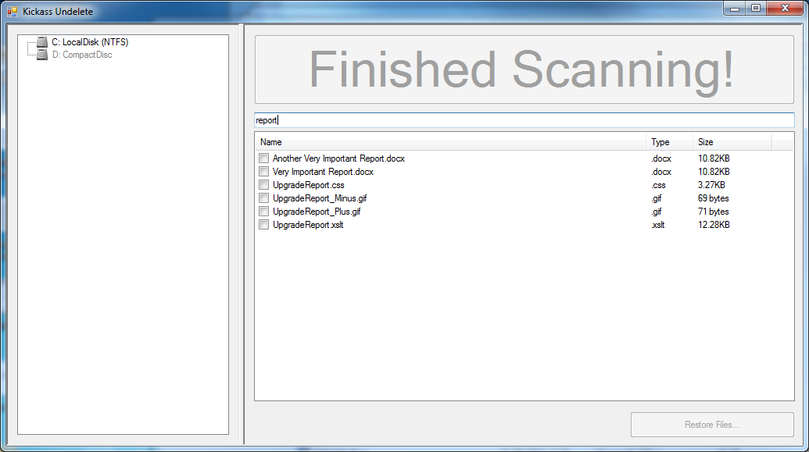
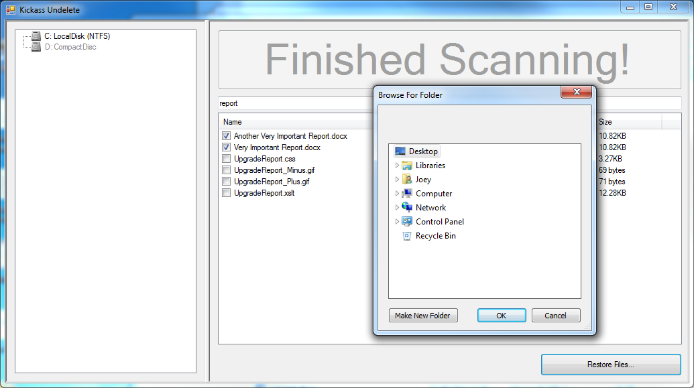

About
Kickass Undelete is a free, fully featured, file recovery tool for Windows. Accidentally deleted a file? Never fear; the data is probably still on your drive and may be recoverable. Kickass Undelete finds all of the deleted files on your hard drive, flash drive or SD card and allows you to recover them.
Disclaimer: Undeletion works best if performed as soon as possible after file deletion. When you delete a file, the data is not lost - but new files being written to the hard drive may overwrite your data permanently, making recovery impossible.
Features:
- Free and Open Source
- Support for both FAT and NTFS filesystems
- Filter by filename and extension
- Easy-to-use interface
Kickass Undelete is open source! Visit our project on Sourceforge to report bugs or contribute to the project.
Downloads
Latest version:
| 1.0 beta | |
|---|---|
| Zip file | KickassUndelete_1.0_beta.zip |
Screenshots:
    {kind=link}
{kind=link}
{kind=link}
{kind=link}
{kind=link}
Developers
Joey Scarr - personal website
Josh Oosterman - personal website
Lukas Korsika